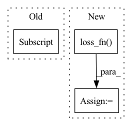

Pattern ID :33927

Before Change
loss = F.mse_loss(
fake_acts[self._content_index],
real_acts[self._content_index]
)
if self.backward:
After Change
real_acts = self.vgg(real)
fake_acts = self.vgg(fake)
loss = self.loss_fn(
fake_acts[block_index],
real_acts[block_index],
p
)
if self.backward:
loss.backward(retain_graph=True)
In pattern: SUPERPATTERN
Frequency: 3
Non-data size: 3
Instances
Fragment ID: 97189720
Project Name: stomoya/animeface
Commit Name: cae4c79342cec56f04cc7b4a5064dda1227d68c5
Time: 2021-03-07
Author: blackie0110@gmail.com
File Name: implementations/gan_utils/losses.py
M Class Name: VGGLoss
N Class Name: VGGLoss
M Method Name: content_loss(5)
N Method Name: content_loss(3)
M Parent Class: Loss
N Parent Class: Loss
M File Name: implementations/gan_utils/losses.py
N File Name: implementations/gan_utils/losses.py
M Start Line: 364
M End Line: 378
N Start Line: 384
N End Line: 400
'>
Before Change
W = self.encoder.src_embedding.get_embedding().T
mask = x.view(-1).eq(self.MASK)
enc_output = enc_output.view(-1, self.d_model)[mask]
logits = torch.matmul(enc_output, W)
outputs = [logits]
After Change
outputs = outputs + enc_outputs
if compute_loss == True:
loss = self.loss_fn(outputs, targets)
outputs = [loss] + outputs
return outputs
'>
Fragment ID: 97189714
Project Name: yaoxiaoyuan/mimix
Commit Name: 59b6082bb310a2a17c2ac30225e300124904cc2f
Time: 2022-06-21
Author: sbsbsbsbsb945@gmail.com
File Name: src/models.py
M Class Name: TransformerBiLM
N Class Name: TransformerBiLM
M Method Name: forward(5)
N Method Name: forward(3)
M Parent Class: nn.Module
N Parent Class: nn.Module
M File Name: src/models.py
N File Name: src/models.py
M Start Line: 1165
M End Line: 1179
N Start Line: 1399
N End Line: 1433
'>
Before Change
def _calculate_loss_prob_pred(self, batch: Dict[str, Tensor]) -> Tuple[Tensor, Tensor, Tensor]:
y = self.model(**batch)
loss, logits = y["loss"], y["logits"]
y_prob = torch.softmax(logits, 1)[:, 1]
y_pred = logits.argmax(dim=1)
return loss, y_prob, y_pred
After Change
y = self.model(**batch)
batch["labels"] = labels
logits = y["logits"]
loss = self.loss_fn(logits, labels)
y_prob = torch.softmax(logits, 1)[:, 1]
y_pred = logits.argmax(dim=1)
return loss, y_prob, y_pred
'>
Fragment ID: 97189719
Project Name: ustcml/mini-lightning
Commit Name: 7662c4625ea67fd4d450ebbda93ac66b0d7ce85a
Time: 2023-03-24
Author: hjt_study@qq.com
File Name: examples/nlp.py
M Class Name: MyLModule
N Class Name: MyLModule
M Method Name: _calculate_loss_prob_pred(2)
N Method Name: _calculate_loss_prob_pred(2)
M Parent Class: ml.LModule
N Parent Class: ml.LModule
M File Name: examples/nlp.py
N File Name: examples/nlp.py
M Start Line: 46
M End Line: 47
N Start Line: 73
N End Line: 77